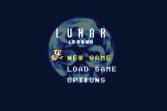

Lunar Legend (USA)
EEPROM 64K
Cartridge Identity
- Game Code
ALNE(FamilyALN)- Header Title
LUNAR LEGEND- Maker / Revision
41/ rev0- ROM Size
- 8.0 MiB (8,388,608 B)
- Save Media
EEPROM 64K- SHA-256
b38689b2315492d670724b34b6e7110340f18836517beaa775114c202f24a6e5
Screenshots


Hardware MMIO Subsystems
ppu_display0x80008e4,0x8000f18,0x8001168,0x8005058,0x80067ec,0x80088cc,0x8009604,0x80096d8,0x805323c
Regional Variants & Revisions (Family ALN)
- Lunar Legend (Japan) (
ALNJ, 8 MiB)